Префектура Кагосима · город Кагосима · ремёсла и еда
Город Кагосима глазами дизайнера: чай, ремёсла, лапша и вечер в бывшем банке
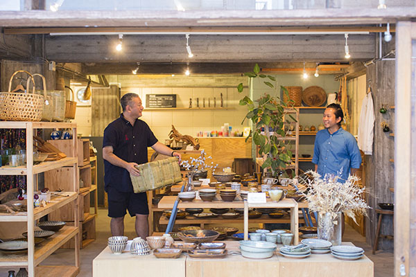
Город Кагосима для дизайнера Синъитиро Накахары не туристический маршрут, а родной дом. За один день он провёл нас по своим местам: от закусочной в жилом квартале до бара в бывшем банке.
Герой
Дизайнер, который живёт на два города
Кагосима для Накахары родной город, и знакомые у него здесь на каждой улице. Поэтому прогулка с ним получается не по достопримечательностям, а по людям: к хозяевам лавок, поварам и мастерам, к которым он заходит годами. Ниже маршрут одного дня, каким он был в 2017 году.
Завтрак
«Нагасаки-ан»: тямпон, который уехал в Америку
Поздний завтрак Накахара выбрал в «Нагасаки-ан», небольшой столовой, спрятанной среди жилых домов. Туристы сюда почти не доходят, а местные знают её давно.
«Однажды я привёл сюда друга из Америки. Вернувшись домой, он открыл раменную, и тямпон отсюда так его впечатлил, что он добавил в меню кагосимский тямпон»
Синъитиро Накахара
Сам он в тот раз заказал сара-удон, хрустящую лапшу под густым соусом с овощами, и жареный рис, который считает лучшим в Японии.
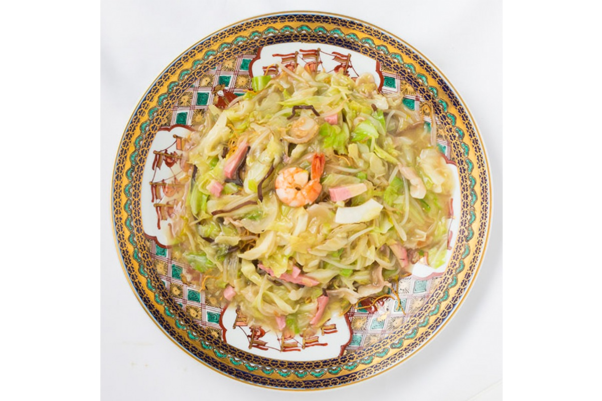
«Нагасаки-ан»
- Адрес
- префектура Кагосима, город Кагосима, Сирояма, 1-34-8
- Телефон
- +81 99-223-0200
- Часы работы
- 11:00–14:00, 17:30–20:30 (последний заказ)
- Выходные
- второй и четвёртый понедельник месяца
Чай
«Сусумуя тятэн»: кагосимский чай в новом интерьере
Префектура Кагосима одна из главных чайных областей Японии: в 2017 году по объёму производства чая она была второй в стране. «Сусумуя тятэн» продолжает линию человека, которого здесь называют «отцом кагосимского чая»: он много сделал для развития чая в префектуре.
Интерьер магазина сделала компания Накахары. Традиционную японскую простоту здесь соединили с современными линиями: светлое дерево, стекло, витрины с коробками чая. На полках смеси кагосимского чая и чай с одного сорта и участка, чтобы можно было почувствовать характер каждого.
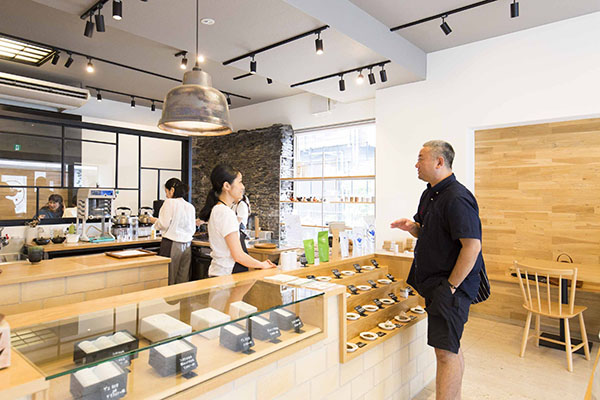
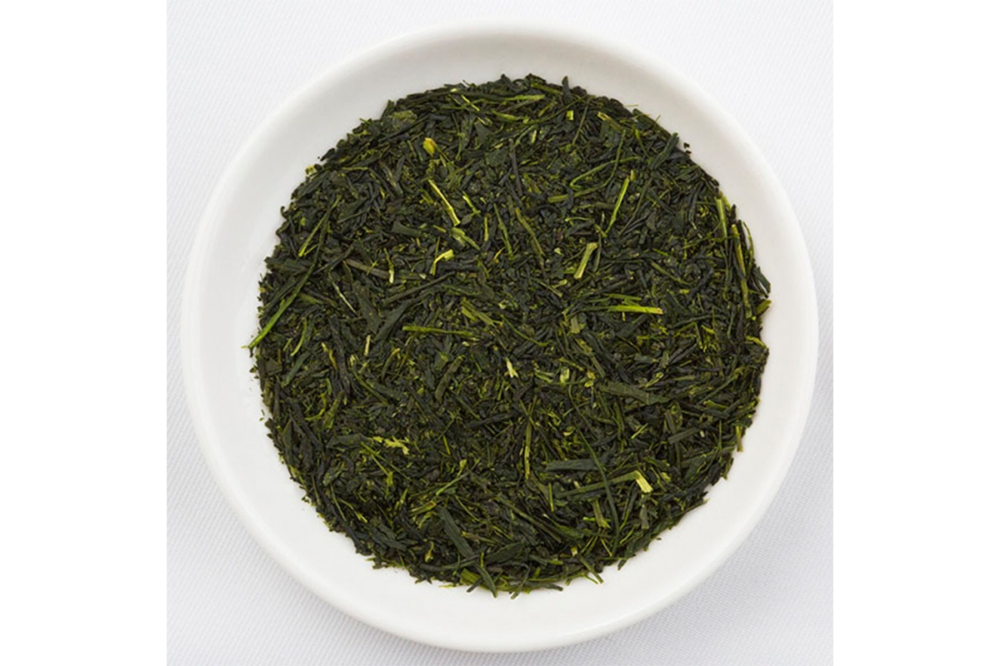
«Сусумуя тятэн»
- Адрес
- префектура Кагосима, город Кагосима, Уэнсоно-тё, 27-13
- Телефон
- +81 99-251-4141
- Часы работы
- 10:00–18:00
- Выходные
- среда
Вещи
OWL: то, чем пользуются каждый день
Дальше путь лежит в Тэммонкан, самый большой торговый и развлекательный квартал Кагосимы. На втором этаже одного из зданий работает OWL, магазин хороших повседневных вещей: товары для дома, антиквариат, канцелярия и книги.
«Здесь нет ничего ради эффекта. Только вещи, которыми действительно пользуешься. Поэтому в этом магазине так спокойно»
Синъитиро Накахара
В тот раз он купил носовой платок.
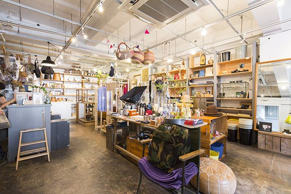
OWL
- Адрес
- префектура Кагосима, город Кагосима, Хигаси-Сэнгоку-тё, 14-16, здание «Ягами», 2-й этаж
- Телефон
- +81 99-222-0357
- Часы работы
- 12:00–19:00
- Выходные
- вторник
Лапша
RIRAKU: мягкий рамен на рыбном бульоне
На обед Накахара зашёл в RIRAKU неподалёку. Лапшу здесь делают с добавлением цельнозерновой муки, и она получается упругой. Бульон варят на кацуобуси из рыбацкого порта Макуразаки, сушёной скумбрии и грибах сиитакэ, а приправы берут только натурального брожения. Рамен выходит лёгким и мягким, но с глубоким вкусом.
За поездку это была уже четвёртая миска лапши. Накахара так любит лапшу, что держит в Токио ресторан с вьетнамским супом фо, и на юге Кюсю для него нашлось немало мест, которые его удивили.
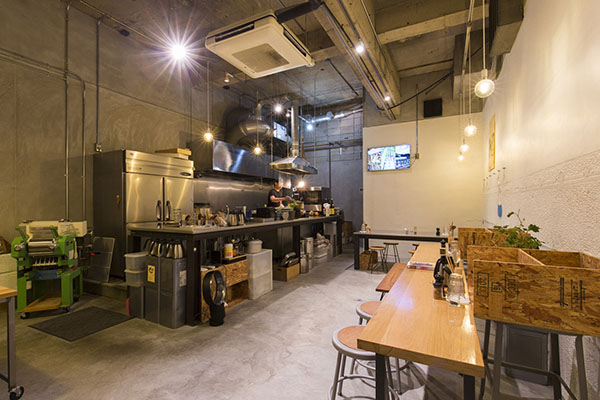
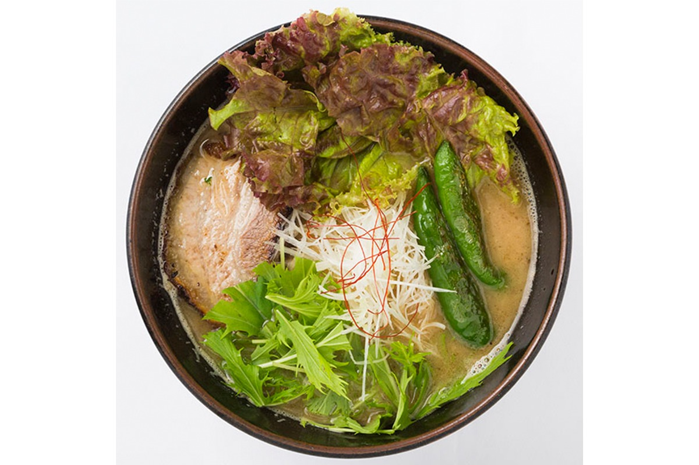
RIRAKU
- Адрес
- префектура Кагосима, город Кагосима, Хигаси-Сэнгоку-тё, 15-14, здание «Минода», подвальный этаж
- Часы работы
- 11:30–16:00, 17:30–21:30
- Выходные
- среда
Кожа
RHYTHMOS: ручная работа, которая служит годами
RHYTHMOS это кожаный бренд мастера, который научился работать с кожей сам, без учителя. Строчка у его вещей такая ровная, что трудно поверить, что её шили вручную. Изделия можно отдать в ремонт, поэтому ими пользуются долго. Вещи RHYTHMOS удобны в деле, и среди друзей Накахары у бренда много постоянных покупателей.
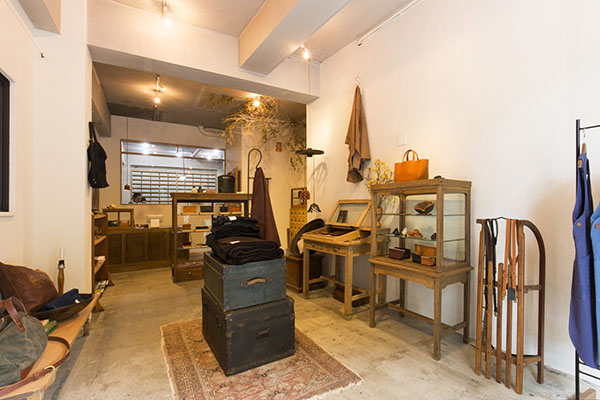
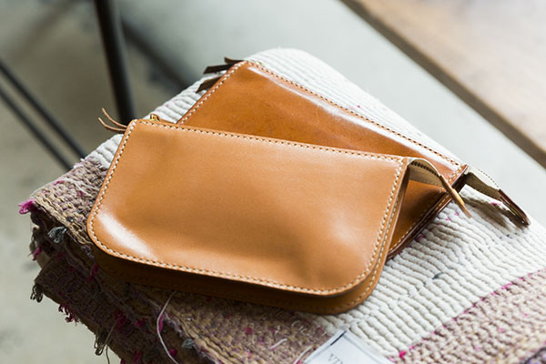
RHYTHMOS
- Адрес
- префектура Кагосима, город Кагосима, Тэрукуни-тё, 18-7
- Телефон
- +81 99-213-9012
- Часы работы
- 12:00–18:00
- Выходные
- вторник, третий понедельник месяца
Ремёсла
Oginna: только то, что понравилось
Следующая остановка совсем другая: Oginna, магазин народных ремёсел и авторских вещей. Владелец ездит по всей Японии, в первую очередь к мастерам Кюсю, и привозит только то, что ему самому понравилось. Открыл он магазин в 29 лет. Услышав об этом, Накахара задумчиво сказал: «Да, времена изменились».
Oginna
- Адрес
- префектура Кагосима, город Кагосима, Коримото, 3-8-13
- Телефон
- +81 99-296-1227
- Часы работы
- 11:30–19:00
- Выходные
- нерегулярно
Вечер
«Бункэ Мудзяки» и бар в каменном банке
Ужинать Накахара пошёл в «Бункэ Мудзяки». Кроме местной кухни здесь хороши якитори и одэн с соусом мисо.
«Они открыты и по воскресеньям, и здесь можно шумно посидеть компанией. Это очень выручает»
Синъитиро Накахара
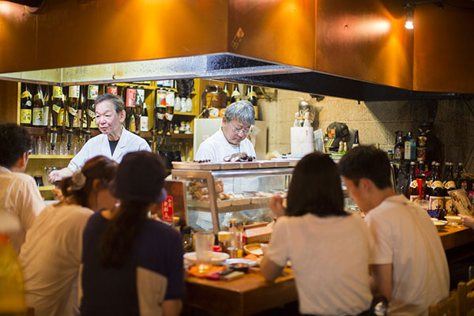
«Бункэ Мудзяки»
- Адрес
- префектура Кагосима, город Кагосима, Хигаси-Сэнгоку-тё, 11-4
- Телефон
- +81 99-222-4976
- Часы работы
- 17:30–23:00
- Выходные
- второй и четвёртый понедельник месяца
Второй адрес вечера: B.B.13 BAR. Бар устроили в бывшем банке с каменными стенами, и здесь спокойно пьют выдержанный виски. По словам Накахары, кроме напитков здесь хорошо и кормят.
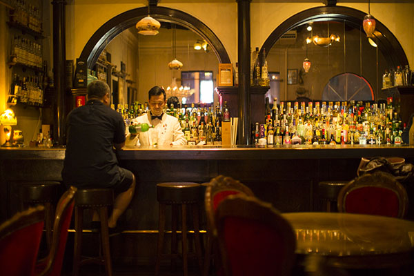
B.B.13 BAR
- Адрес
- префектура Кагосима, город Кагосима, Идзуми-тё, 16-13, здание «Тоё сангё», 2-й этаж
- Телефон
- +81 99-223-4298
- Часы работы
- 18:00–3:00
- Выходные
- нерегулярно
Фото: Косаку Китадзима.